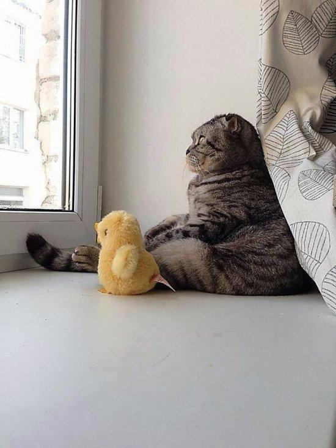
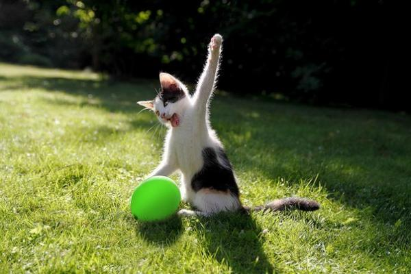

Всем hi, это мой первый пост, прошу любить и жаловать. Что хочу сказать, март прошел, а меня до сих пор не отпустило. Вот посмотрите какая киска. Как вам?
Извините, но мы будем периодически отвлекаться на кисок. Да, я начинающий блогер, но с амбициями. Хоть периодически линяю, собираюсь стать блогером 80 level. Ради этого я готов вычесывать блох, держать в страхе всех мышей в округе, орать ночью мартовским матом на всю округу - это, правда, для собственного удовольствия. Урчать, стоять на задних лапах, ходить в лоток, обещаю не драть обои, не лазать по шторам.
Думал сначала делать ставку на критическое мышление, изучение классической литературы, истории, современного состояния экономики, политической системы для анализа и полного понимания состояния текущего положения дел, для понимания дальнейшего, наилучшего, возможного развития будущего и что для этого необходимо делать.
Потом подумал: я ж с людьми разговариваю, о чем это я, меня никто не поймет, мне тупо не с кем будет общаться.
Так, что теперь я пока осваиваю поход в туалет, да именно не в лоток, а в туалет и уже есть результаты, если пипл периодически промахивается, то я нет.
Свою позицию я буду защищать до конца
Оставаясь в рамках приличия и не скатываясь
Короче, котаны, на вас сосиску поджарить?
Итак, всех поздравляю с первым постом.
